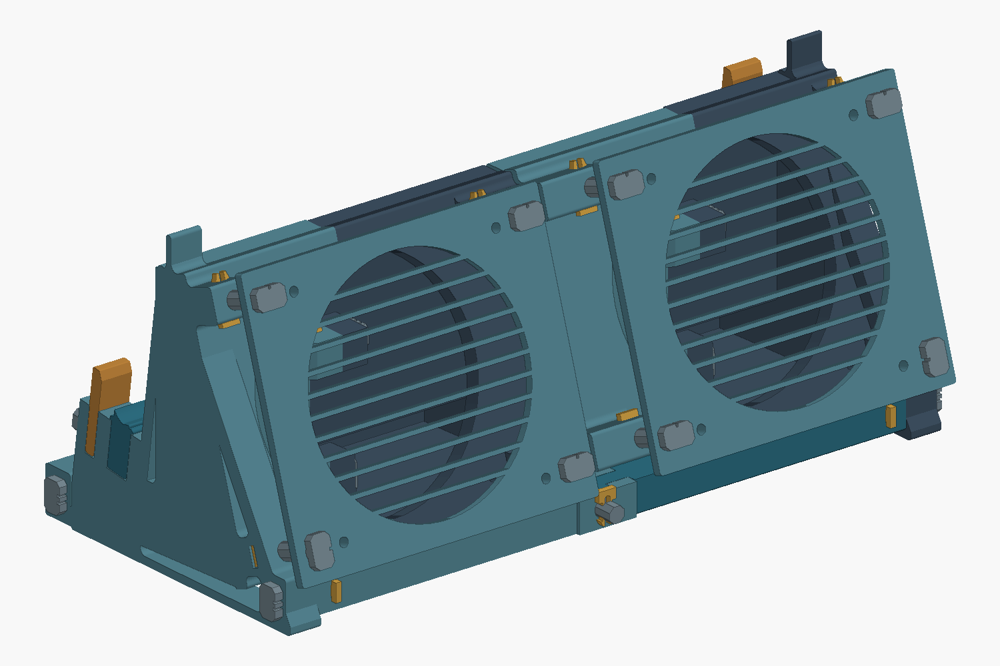
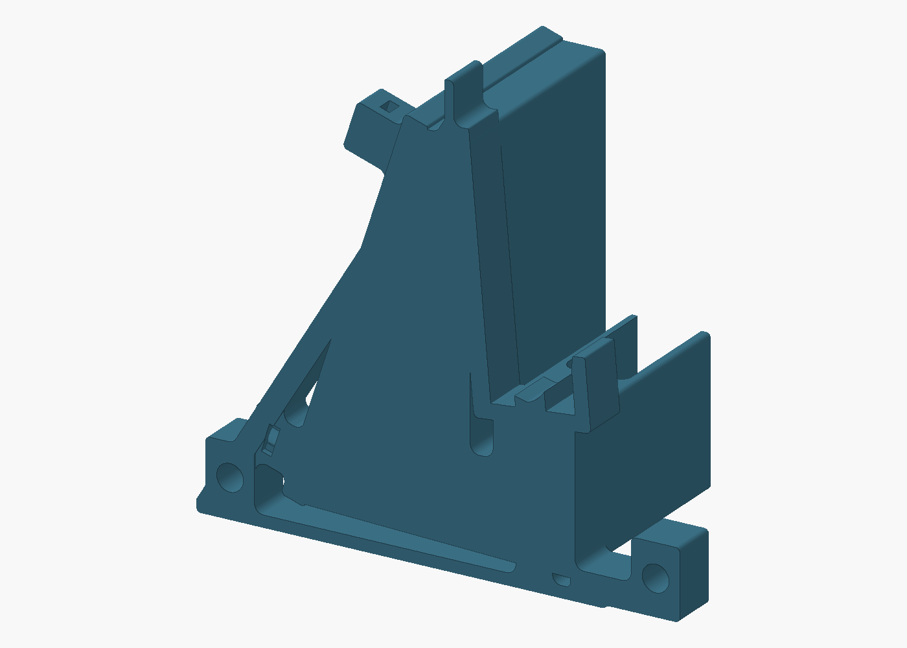
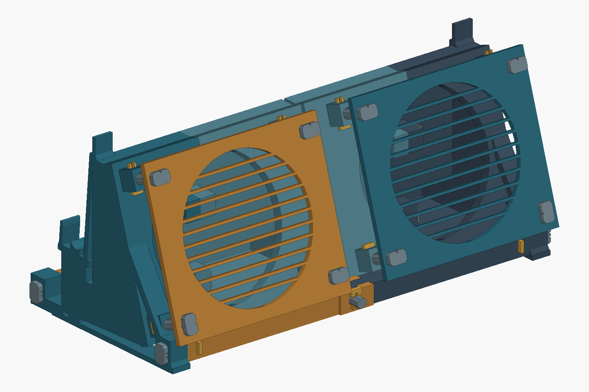

A concrete checkpoint for the next session
D9 P2 is ready
for prototype printing.
V5 coupon C seated: R2 seat with the 1-mm local relief and the lid rail moved 3.5 mm outward. The R4 loaded bracket pair carries that geometry with thicker members and is printing together with the D9 P2 fastener fit parts on one plate. Test the pair with the laptop next. D9 P2 uses printed pins and locking keys throughout the cradle, plenum, guard and brace assembly. No added metal hardware is required. The plug mechanism is excluded; physical dock qualification remains open.
Current status
| Work | Established | Still open |
|---|---|---|
| R4-C bracket pair + P2 fastener fit plate | Toolpaths verified; one plate sent to the P1S (dark-grey PETG, AMS slot 2), about 7 h 05 m and 217 g. R2 contact, C seat relief, lid rail moved 3.5 mm outward, rail/fence/base/brace thickened outward. Ten P2 pin, key, socket and T-joint trial parts ride along. | Loaded seating, rocking, lid clearance, docking alignment and pin/key retention on the real parts. |
| V5 fit coupons · lid rail +3.5 mm | Printed and handled: C seated. V4 geometry with the entire rail side moved 3.5 mm away from the seat and short fence. | Superseded by the R4 pair. The 3.5 mm is a requested trial increment, not a measured lid thickness. |
| V4 full-height fit coupons | Printed and handled. All three coupons hit the rail before the seat; C (three openings) was still not enough. | Superseded by V5. Label or discard V4 prints so they are not confused with V5. |
| V1 seating investigation | Four original photos reviewed and retained locally; rocking onto the short fence is documented. | Exact local contour and clearance. A thicker or curved lid remains a hypothesis, not metrology. |
| D9 P2 cradle / plenum / fan assembly | 50 printed parts; seven assembly plates and one fit plate verified. Both nominal plenums pass closure and port-opening checks without fastener-seal patches. | Physical seating, support removal, pin/key retention, creep, loaded stability and cooling. Plug mechanism excluded. |
| Airflow and acoustics | Corrected fan/area calculations, a future resistance-test plan and controlled acoustic-test guidance. | No D9 CFD solve, measured useful airflow, cooling benefit or acoustic improvement. No new print was sent. |
D9 P2 replaces P1 metal fasteners with printed pins, locking keys and floor-backed T joints. D8 remains available as the original full assembly reference, including connector work. R2 cradle contact is retained pending the physical coupon trial.
Download D9 P5 — current model
P5 leans the laptop 8° and makes the contact modular on a common frame: each cradle end is the R7 frame (base, brace, tower with two 22 mm channels, 8° lid rail, 6 mm outer wall) and everything the laptop touches except that rail is a drop-in peg, a seat peg per machine and a fence peg per end (64 mm wall at the plug end, 15 mm at the far end), locked by one horizontal fan pin with a 0.15 mm cam offset. The plenum front wall moved 2.5 mm back for the 8° lid. P4 fit corrections, connections, plenums, guards and ties are unchanged, so plates 02, 03, 05, 06 and 07 can print now. One P4 correction was withdrawn on 18 September: the T tongue is back to its 12.7 mm P2 height, because the 0.6 mm “proud” reading came from stuck support debris and the cleaned pair nests flush. Round-shaft trial: the four frame-end pins are now round 8.2 mm with one chord flat on the bed, so they fill the 8.4 mm bores instead of touching at eight corners; the other pins stay octagonal until judged.
Fit plate 40 g, 1 h 53 m. Contact pegs (plate 08) 30 g, 1 h 19 m. Outer cradles 01 and 04: 441 g, 20 h 03 m. Contact-independent plates 02, 03, 05, 06, 07: 668 g, 26 h 36 m. All assembly plates 01–08: 1,139 g, about 47 h 58 m. Plate 09, the cradle-end trial (the M1 cradle end sliced to its 16 mm frame width with a seat peg, the tall fence peg and a pin): 136 g, 7 h 01 m, for feeling the 8° seat before the cradles. Plate 01 (M1 outer cradle) printed in calibrated Polymaker PolyLite ASA on 18 September; the overnight plate is both inner halves with the pegs, insert pins and round frame-end pins (14 h 40 m, 327 g).
01 M1 outer cradle (R7 frame) · 02 M1 inner · 03 M2 inner · 04 M2 outer cradle (R7 frame) · 05 M1 guard + front ties · 06 M2 guard + rear ties · 07 pins and keys · 08 contact pegs · 09 cradle-end trial
P5 kit SHA-256: 6f1a2b8e801f97713aecce818e1896b803751282704cdf0a672ca1f3994cd2a1

Archived P4 kit
P4 is P3 plus three things learned from the printed parts on 18 September: the plug-end cradle (M1) carries the R5-C underside rail (64 mm, 6 mm thick, 2.25 mm running clearance) so the laptop cannot tip away from the lid rail, while the far-end cradle (M2) stays R4-C because the rear rubber-foot strip slides through that end during the 18 mm docking travel; pin bores 8.8 → 8.4 mm; key barbs 6.2 → 7.2 mm wide (1.8 mm total interference); T tongue 0.6 mm lower so it sits flush. Plate 00 is regenerated: print it first. Enclosure audits pass, air volumes unchanged, all eight plates verified.
Fit plate: 40.39 g, 1 h 53 m. Plates 01–07 once each: 1,105 g, about 46 h 31 m; outer cradles 01 and 04: 436 g, 19 h 57 m; the five contact-independent plates: 669 g, 26 h 34 m. No print was sent.
01 M1 outer cradle (R5 wall) · 02 M1 inner · 03 M2 inner · 04 M2 outer cradle (R4) · 05 M1 guard + front ties · 06 M2 guard + rear ties · 07 pins and keys
P4 kit SHA-256: 1e48993b7029035e15dacdadab28dbc964ec349979dc699af86eb6c8ea03dd86
Archived P3 kit
P3 is P2 with the outer cradles rebuilt on the R4-C contact profile (V5 C seat, lid rail 3.5 mm further out, thicker rail and fence) and a printable edge treatment on the shells, guards and ties: fillets on print-axis corners, chamfered tie tops, bed edges untouched, every mating zone protected. Pins, keys and the fit plate are identical to P2, so the printed P2 fit parts still apply. Both plenums pass the enclosure audit with zero change to the air volume; all seven plates passed Orca verification. Hold plates 01 and 04 until the R4-C pair has carried the laptop.
Plates 01–07 once each: 1,098 g, about 46 h 18 m. Outer cradles 01 and 04: 430 g, 19 h 45 m. The five contact-independent plates: 668 g, 26 h 34 m. Repro P1S, 0.4 mm, Generic PETG; no print was sent.
01 M1 outer cradle · 02 M1 inner · 03 M2 inner · 04 M2 outer cradle · 05 M1 guard + front ties · 06 M2 guard + rear ties · 07 pins and keys
P3 kit SHA-256: b47be2a8c2c7a70cf949f0aff2e8e77b962f9705ed61dfdedbb8b5b5584573bf

Archived P2 kit
Ten major parts, 20 printed pins and 20 removable locking keys. Two purchased 120 × 120 × 25 mm fans are required; the plug mechanism is excluded. No added screws, nuts, washers or inserts.
OPEN-ME and plate 00 are the same fit trial: print one copy. Then print plates 01–07 once each. Fit trial: 40.26 g / 1 h 52 m. Assembly: 1,098.99 g / 44 h 54 m. Repro P1S, 0.4 mm, Generic PETG; confirm the actual machine and material. No print was sent.
- 00 START HERE fastener fit — native Orca plate
- 01 M1 outer cradle — native Orca plate
- 02 M1 inner — native Orca plate
- 03 M2 inner — native Orca plate
- 04 M2 outer cradle — native Orca plate
- 05 M1 guard front ties — native Orca plate
- 06 M2 guard rear ties — native Orca plate
- 07 printed pins and keys — native Orca plate

Actual support and bridge paths · Production-key toolpaths. The ZIP includes all eight projects, matching G-code, CAD, editable source, profiles, previews, receipts and hashes. Hidden supports are intentional and removable before assembly.
{kind=link}
{kind=link}
Earlier P1 kit with metal fasteners
Archived D9 P1 kit. P1 hardware and P2 printed connections are separate designs; do not mix their parts.
Download the R4-C pair plate and the V5 printables
R4-C bracket pair + P2 fastener fit parts, one plate. Two freestanding brackets with the V5 C contact geometry and thicker members, plus the ten P2 fit-trial parts. Repro Normal profile at 15 % grid infill; 7 h 05 m, 217 g. Sent to the P1S on 17 September.
R4-C kit SHA-256: b05317199cf3523b28a9c0bccff8b9348f1ae913bbe25361c333c53857bf7b3d
V5 is V4 with the whole lid-rail side moved 3.5 mm further from the seat, hinge-bearing surface and short fence, measured normal to the rail face; the deck between grows by the same 3.5 mm. Seat, fence, C relief and identifiers are unchanged. Download the native Orca project to open the prepared A/B/C plate, or the complete fit kit for matching G-code, CAD, profiles and instructions. These are handheld fit-test specimens.
V5 prints look like V4 prints: the flat deck between the seat and the tall rail is 3.5 mm longer on V5. Fence inner face to rail inner face: A 22.42 → 25.92 mm; B and C 24.42 → 27.92 mm.
The full local handoff remains at outputs/5680-design-team/CLOSEOUT-20260917/. The diagnostic research archive remains local.
| File or folder | Contents and status |
|---|---|
| Precision_5680_V5_Rail_Plus_3p5mm_Fit_Kit.zip | The V5 kit: 44 hashed payload files plus the manifest. Native Orca project, matching G-code, fallback STEP/STL, editable V5/V4/V2 builders, profiles, previews, the independent V4-to-V5 comparison and the all-layer identifier audit. Toolpaths verified; the plate was submitted to the P1S. |
| Precision_5680_V5_Rail_Plus_3p5mm_Fit_Coupons.3mf | One each A/B/C, P1S, 0.4-mm nozzle, Generic PETG, textured PEI. Estimated 48.18 g and 1 h 52 m 33 s model time. Open in Orca and confirm it matches the actual printer/material. |
| Precision_5680_V4_Full_Rail_Fit_Kit.zip (superseded) | The V4 kit: 43 hashed payload files plus the manifest. Native Orca project, matching G-code, fallback STEP/STL, editable source, profiles, previews and verification receipts. Toolpaths verified; physical fit untested. |
| Precision_5680_V4_Full_Rail_Fit_Coupons.3mf (superseded) | The V4 plate as printed. Retained for reference only; all three coupons hit the rail before the seat. |
Precision_5680_20260917_Diagnostic_Evidence.zip | Failed D9 snapshots, independent review, calculations, source revisions and unexecuted test plans. Not a print release. The later V3 builder does not reproduce the original frozen export; that mismatch is recorded. |
evidence/, DELIVERABLES.json, NEXT-STEPS.md | Readable evidence folders, download identities and hashes, and the ordered resume list. Original four V1 photos remain in the adjacent physical-fit-evidence/ folder. |
Coupon identifiers (unchanged from V4): A has one square opening and the original R1 profile. B has two and the actual R2 capture changes. C has three and adds the local 1-mm seat relief to B. All retain the full original lid-side rail, now 3.5 mm further out.
V5 fit-kit SHA-256: b77e37024829fc4f429b4107b6d0c55ebb84603aedd0819f95cccecb81e0aa10 · V4 fit-kit SHA-256: 5d98ca89825dc0012866ddff6cc93e13835a561b51cc547a12badd7109ee9cf2
Next steps · in order
- Trial the P2 printed connections. Download the fastener fit plate. Check insertion, positive retention and deliberate removal in both fan-socket arrangements and the T joint. It is about 40 g and 1 h 52 m; do this before the large shell prints.
- D9 P2 now has actual print files. Download the seven assembly plates, fit-test plate or complete kit. Geometry, enclosure and Orca checks passed; the fit trial below remains necessary before relying on the cradle.
- Test the R4-C bracket pair with the laptop. (Its seat is what the P5 seat peg carries; P5 adds the underside wall and the 8° lean.) Stand the pair at the R2 spacing, lower the closed laptop on with the lid toward the tall rails, and record seat engagement, rocking, lid-to-rail contact, stability under a nudge and docking travel. Then trial the P2 pins, keys, sockets and T joint from the same plate. If the pair passes, put the same rail move and C seat into the D9 P2 outer cradles (plates 01 and 04) before printing them.
- V5 coupon result. C seated; A and B did not. If the coupons need reprinting, download the native Orca plate or the complete V5 fit kit with instructions. Keep the selected orientations, identify A/B/C when removing them, and keep V5 prints separate from the V4 prints (the deck between seat and rail is 3.5 mm longer on V5).
- Compare first contact on the real laptop. Support the laptop independently and present each coupon gently at the same section and pose. Record whether the curved seat, short fence or tall rail touches first, whether the seat catches, and any rock or gap. Do not load the coupons or flex the rails to force a fit.
- Resolve the contact profile before a full stand print. Use those observations and any needed local measurements. If the lid still reaches the rail first on V5, measure the remaining gap rather than guessing another increment. A/B/C can distinguish behavior; they do not measure a uniform thickness correction. Then check full-height engagement, loaded stability, docking alignment and connector protection.
- Dry-assemble D9 P2. Remove accessible internal supports; trial the printed pins and keys, then check T joints, seam tabs, guards and fan clearance. Join braces on the bench and fit internal seam keys before the fans. Optional seam sealant addresses leakage. Both nominal plenums now pass the enclosure checks. Keep the laptop independently supported for the initial fit trial.
- Use Orca after the geometric design review. Verify the selected poses, support removal, actual bridge direction and anchoring, visible surface finish, identifiers and bed clearance. Print the relevant joint/contact specimen before the full dock. Correct demonstrated defects instead of searching through slicer guesses.
- Run the bounded component-resistance screen when ready. One future module-1 test prescribes 10 CFM, after geometry, boundary and mesh review, within the recorded 15-minute / 4-CPU / 8-GiB limit. Report computed total-pressure loss and separate reverse flow. This is not a claim that an 800-RPM fan delivers 10 CFM.
- Test the assembled dock with both fans fixed at 800 RPM. Check retention, service access, normal/displaced seating, useful flow versus bypass, temperatures, noise and rattle. Hold fan position, speed, grille, sealing and microphone position fixed when comparing mount compliance; record repeatability.
Download the detailed next-step list ↗
If the earlier R3 scalloped retainer is reused, its saved crest-overlap question also needs inspection. The 20-N docking and 50-N release figures in design proposals are test targets, not measured performance.
Evidence summary · scope matters
- V5 geometry and manufacturing: each V5 solid equals the frozen V4 solid split on a plane through the flat deck, its rail side translated 3.5 mm along the rail normal, plus a 24 × 3.5 × 5 mm deck filler (independent rebuild, zero symmetric difference). Constant-section print geometry, zero support paths and zero external bridges in Orca. All six identifiers retain the checked 1-mm clear cores across 120 layers. Native embedded and standalone G-code match.
- V4 physical result: printed and handled; all three coupons contacted the tall rail before the seat and C was still not enough. This motivated the 3.5-mm V5 offset, which is a requested increment, not a measurement.
- V1 photos: the reported rocking and missed cradle engagement are documented. Exact local contour, clearances, pivot and sealing remain unresolved. Neither the photos nor nominal CAD supports a blanket 4-mm correction.
- V3 identifier correction: the first failed hole check omitted the frozen nozzle coordinate offset. That failure was withdrawn; larger V4 identifiers remain the selected trial. This is not a physical nozzle calibration.
- D9 V3: the intended air volume remained connected to exterior even with both named ports capped. The tray, lid and later R1 coupler have downward-facing surfaces in their nominated poses. Nonzero underside area alone is not a print failure under the user's clarified criteria: assess visibility, removable supports and bridge landings. The recorded measurements stand; the blanket zero-underside requirement is superseded. Individual watertight STLs do not prove an enclosed or printable assembly.
- Flow calculations: the corrected generic fan/area screen reproduced 140 operating rows and 30 constraints. Assumed loss coefficients and source-mouth areas do not establish actual D9 or useful laptop flow.
- Unexecuted work: The earlier D9 V4 panel proposal is superseded by the D9 P2 print package above. No D9 CFD solve, physical cooling test, noise measurement or full-dock qualification was performed. The future 10-CFM resistance test and acoustic comparison remain plans.
The local evidence archive includes exact output hashes and the diagnostic receipts needed to resume without repeating the same failures.